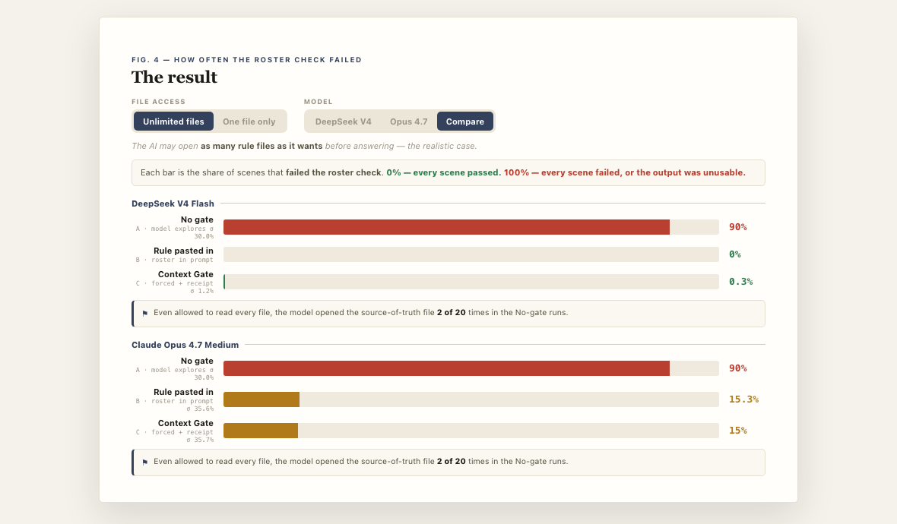

Same content, same panel. Left: today. Right: with Markdown rendering. Toggle the theme to confirm both work.
What is AdsMetri Creative Intelligence?
A workbench for tagging Meta ad creatives by hand so you can compare performance across creative types, hooks, video structures, and visual styles.
What it does
Syncs ad-level creatives + daily performance snapshots from Meta. Shows them in a dense ops table with thumbnail, campaign / ad set, product, type/hook chips, status, spend, ROAS, CPA, CTR, purchases, tagged-state pill.
Keyboard flow: ↵ Save + Next, S Save, K Skip, 1-9 pick chip, Esc close.
Built with
React 19 · tRPC 11 · shadcn/Radix · Tailwind · Drizzle · MySQL · Meta Graph API v25.0
Tags are stored as comma-separated slugs per dimension — multi-select round-trips through the existing single-string field, no schema break.
tags = read_file("approved_roster.json")
receipt = context_gate(source_of_truth=tags, step="tag_ad")The receipt does not make the model smarter — it proves the source of truth was in context.
| Arm | Drift |
|---|---|
| No gate | 90% |
| Context Gate | 0.3% |
Drift rate by arm, both models — an embedded image:

An embedded chart. Caption text below it.
Full writeup: artluai.github.io/context-gate-ai-hallucination